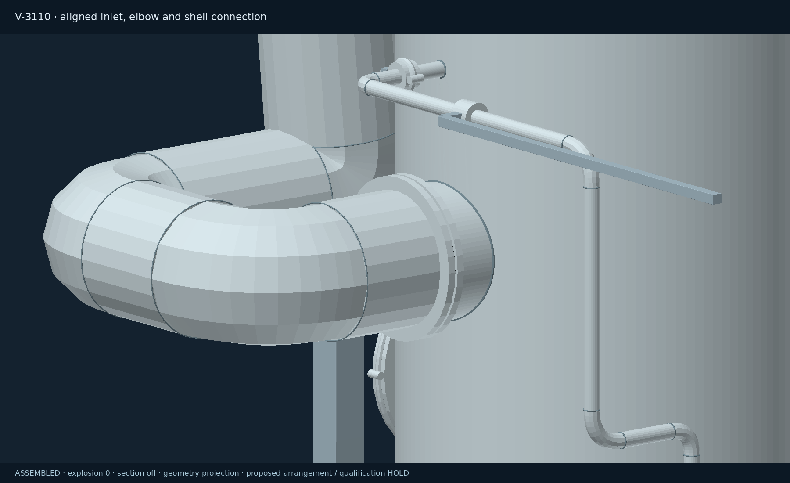
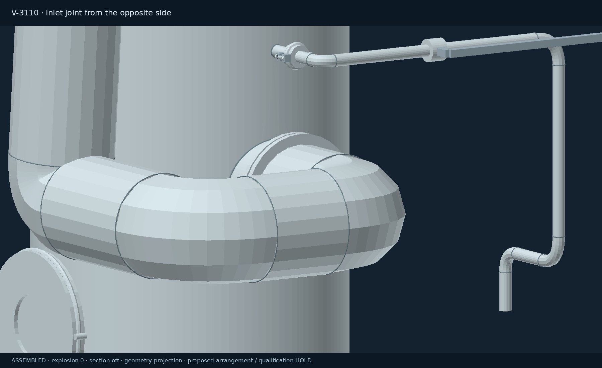
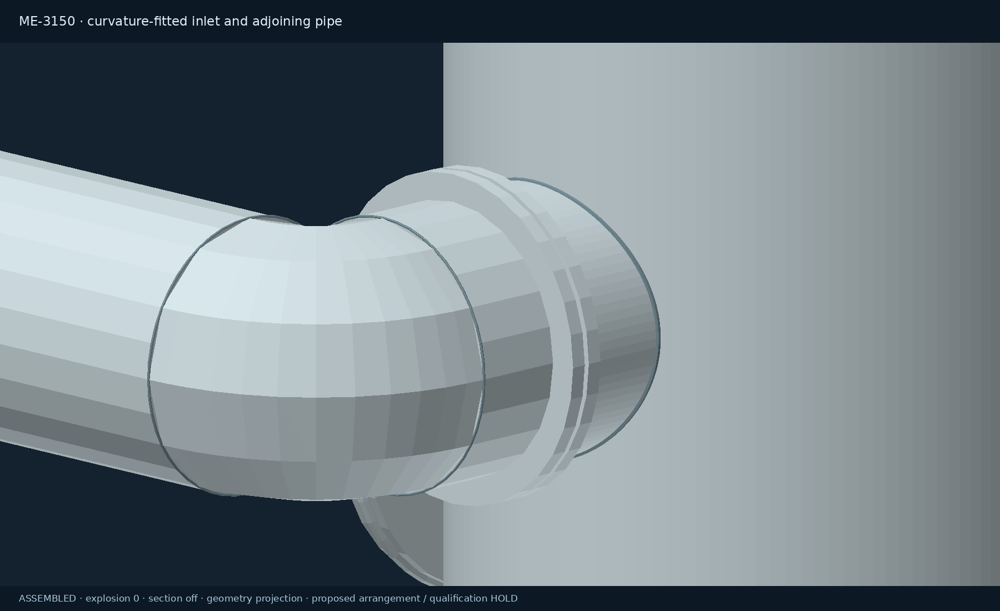
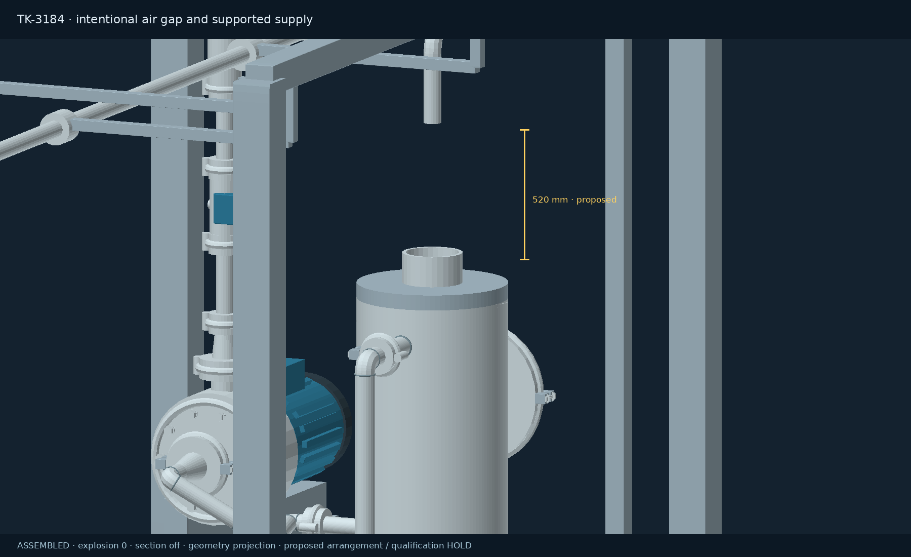
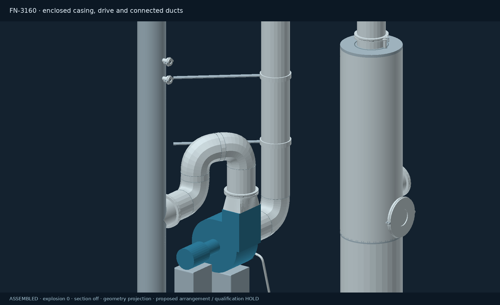
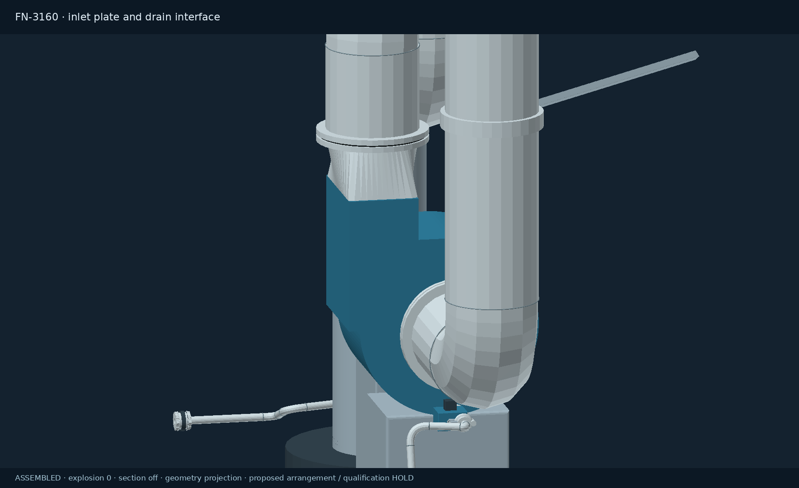
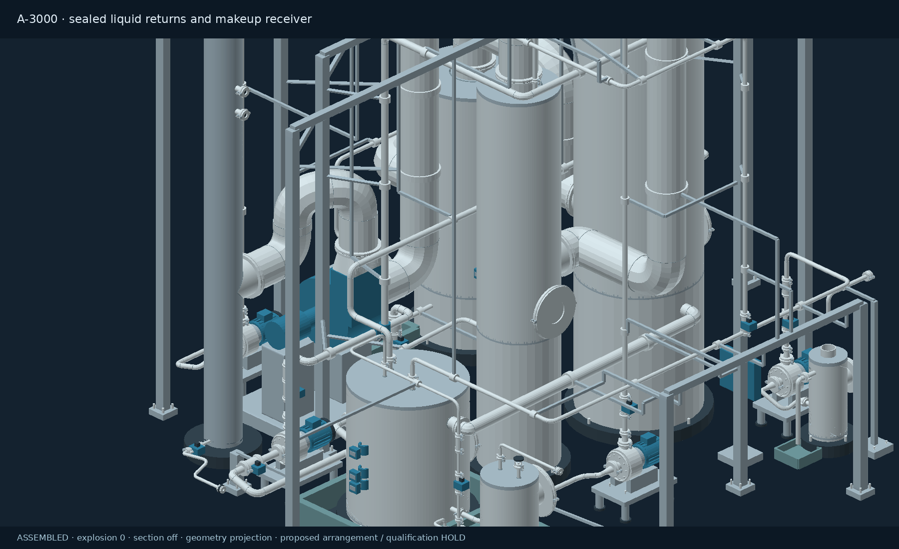
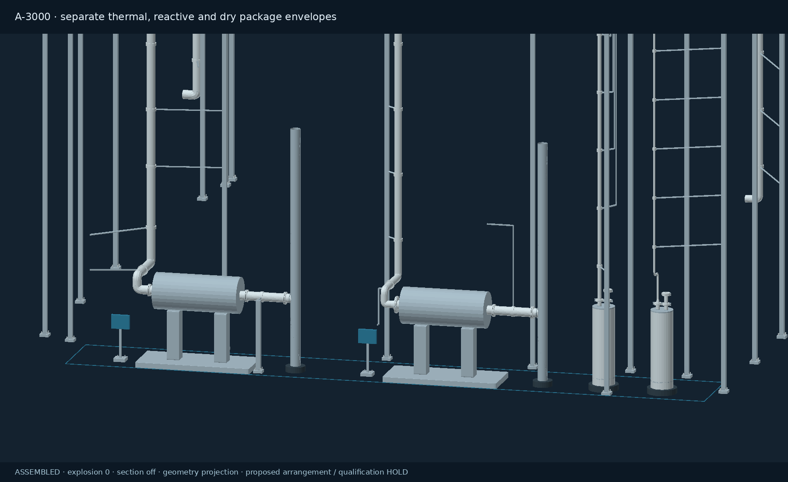

VENT GAS TREATMENT
Vent gas treatment
The wet-acid train, thermal off-gas, reactive off-gas, dry inventory vents and reactive feeder exhaust have separate routing and acceptance requirements. Emergency relief remains independent.
Modeled assembly review
Inspect fan, vessel and pipe interfaces. The proposed makeup-water air gap remains intentional and must not be bridged.
Assembly details and revision history
FN-3160 has a closed volute, inlet and drive plates, an aligned motor and guarded coupling, a tangential discharge transition, and closed drain interfaces. Scrubber and tank connections use actual apertures, dedicated pressure-balance nozzles and internal return legs. The makeup receiver has an open funnel, an air gap and a visible overflow catch tray.
Radial nozzle ends now follow the curved shell. Bore openings are matched on both wall faces, and adjoining pipework stays visible when its equipment is inspected. The water supply remains physically separated from TK-3184 by a proposed 520 mm air gap; the inlet has a dedicated support.
The V-3110 inlet previously met its nozzle at 90° despite coincident centre points. The inlet now has an elbow and a straight, aligned approach. Liquid connections and wet-header takeoffs have also been realigned; six pump adapters now match the adjoining pipe sizes. The duty recirculation pump moved 0.9 m to make room for its suction valve and approach.







Exhaust groups
Moisture alone does not determine compatibility. Treatment must match the contaminant, and connected equipment must tolerate the same pressure regime. A caustic absorber does not establish destruction of CO or H₂. A-600 retains its existing drying-exhaust train.

Tag correction: BL-VENT801 is dry inventory / mixer breathing. BL-REL801 is the A-800 emergency relief outlet. BL-RV701 is A-700 emergency relief.
WorkSafeBC Part 5.71 requires separate exhaust where the specified combustible-material hazards make combination a fire or explosion risk. The proposed separation also addresses chemistry, pressure and different treatment mechanisms. Applicability and final design must be assessed for the actual source duties. WorkSafeBC Part 5 ↗
Every endpoint has a disposition
“Connected” identifies a joined model centreline or declared equipment passage. It does not certify leak tightness, hydraulic seals, materials or pressure ratings. The six unresolved interfaces are the fan and stack drain receivers, two external supplies and the two specialist dry-package outlets. These interfaces have positive blinds in the planning configuration.
| Equipment / connection | Disposition | Reason / limitation |
|---|
Verification and remaining design work
Model check methods
End-face checks now require opposing directions and matching pump adapter sizes. Two declared three-way headers are excluded from the two-face alignment test; their fabricated tee bores need separate detailed review. Mesh aperture tests inspect the actual casing and vessel geometry. Flow checks cover the wet train, duty/standby circulation, isolated waste export and the physical makeup air gap. The new exhaust groups are checked for accidental connection to each other. Grade approach clearance and structural attachment paths are checked separately.
Interactive 3D visual acceptance remains unverified.
Recorded verification limitation · revision 45
The verification browser could not create a WebGL context. These review images are CPU projections of the assembled mesh data; interactive 3D rendering still needs inspection in a WebGL-capable browser. The 3D inspect controls reset explosion to zero, turn sectioning off and reveal the selected equipment and supporting context.
Outstanding engineering includes source analyses, technology selection, fan/stack condensate collection, pressure coordination, seal depth, net containment capacity, vendor maintenance and lifting access, stack dispersion, emissions limits and applicable BC approvals. No approved setpoints or operating permission are supplied.
Mechanism references: Envitech treatment systems · US EPA thermal oxidation.